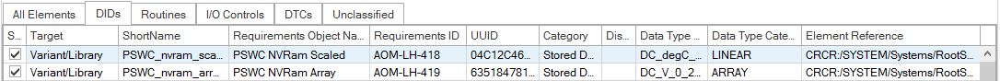
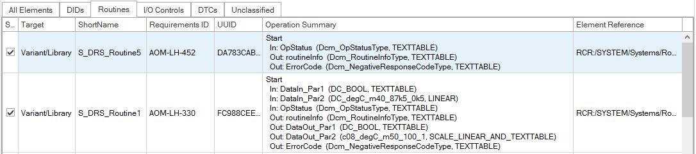
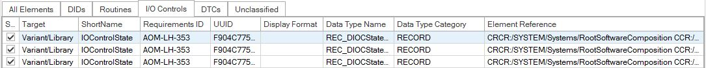
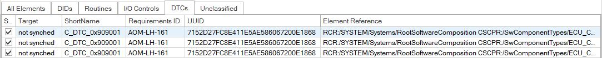
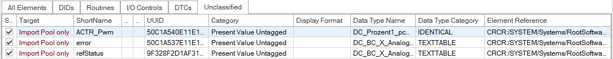

SWC Sync Dialog
See also the SWC Sync Introduction.
SWC Sync Dialog
The SWC Sync Dialog is available via...
[SWCUI-U0500]: The dialog provides a text filter (matching all displayed lists columns). If you provide a filter text, the dialog...
Note: to literally find a text containing blanks, enclose it in double-quotes like "Present Values".
[SWCUI-R0120]: The dialog shows information about the effect of the filter, like
21 of 93 visible in view[SWCUI-U0200]: The dialog provides five views on the extracted data:
The tabs show objects of different types, therefore the lists contain different columns.
The following chapters show screenshots of the tabs.
For details about specific columns, see the chapters further below.
For an overview of which SYS-EX data will be shown in which pages of the dialog, see [SWC-R1200] in the Features section.

SWC Sync Dialog - Tab DIDs

SWC Sync Dialog - Tab Routines

SWC Sync Dialog - Tab IO/Controls

SWC Sync Dialog - Tab DTCs

SWC Sync Dialog - Tab Unclassified
The dialog shows objects that are potentially relevant for diagnostics:
[SWCUI-U0400]: For each object displayed, the dialog allows to decide whether the object shall be processed further.
[SWCUI-R0160]: Lines of objects deselected from further processing are displayed in grey.
[SWCUI-U0300]: For each object displayed, the dialog shows whether the object...
[SWCUI-R0150]: The info whether the object can be synchronized is placed next to the user editable checkbox by default (that is: as the second most left column).
[SWCUI-U0310] Shows the shortname of the object from the system extract.
In CANdela, this corresponds with the qualifier.
For DTCs, the shortname contains the hexadecimal code.
[SWCUI-U0320] Shows the object name (CANdela: name) of the object from the system extract.
[SWCUI-U0330] Shows the requirements ID of the object from the system extract.
For an object shown with target "Import Pool only", the requirements ID is not present in the CANdela document.
[SWCUI-U0335] Shows the UUID of the object from the system extract.
SWC Sync will put the UUID into the attribute [ASR-D001_ASR_UUID].
[SWCUI-U0340] Describes the type of object:
For tabs "DIDs" and "IO Controls", shows the display format (dec/hex...) of the element.
For tabs "DIDs" and "IO Controls", shows the name of the data type
For tabs "DIDs" and "IO Controls", shows the kind of data type, like
For tabs "Routine", shows a summary of the
[SWCUI-R345] Selects the target for the synchronization.
Note: this setting is also controlled in the Requirements Property Page Settings [RQUI-R100-Variant].
[SWCUI-R350]
[SWCUI-R360]
ASR3_Legacy_Combine_DID, which will trigger DEXT Export of the DID as uint8 array.[SWCUI-R0125]: The dialog shows information about the objects selected for synchronization, like
71 of 72 elements in this view are selected for synchronization92 of 93 total elements are selected for synchronization[SWCUI-R0130]: The state of the dialog (column widths, sorting etc.) gets restored when opened the next time.
[SWCUI-R0190]: After closing the dialog, for large system extract files, CANdelaStudio shows the progress of the synchronization.